CleanTec do Brasil
09/09/2026 · VÁLIDA ATÉ 24/09/2026
Alvará, ISO, boletim técnico, ANVISA e FDS dentro do sistema. Cada cliente vê só o que a CleanTec liberar.
Limites separados para pré-operacional e operacional. O alerta de limite excedido deixa de dar falso positivo.
Trocar um produto por outro, ou por vários, e ver o efeito no custo do período. Sem planilha e sem pedir para a Epicora.
Um login de leitura para várias unidades. Resolve o diretor do GTF, hoje cadastrado como Técnico.
Documentos da empresa e documentos por produto, no painel administrativo. PDF, imagem, Word ou Excel, até 10 MB.
No cadastro de cada cliente: se vê os documentos da empresa, se vê os de produto, e quais produtos. A seleção é manual, com "selecionar todos".
Aba Documentos no painel dele: uma pasta por produto, busca, visualização no navegador e download.
Por unidade e por organismo, um para pré-operacional e um para operacional. Todo laudo novo informa o tipo.
Dashboards, matriz de conformidade, exportações e o e-mail de alerta passam a respeitar o tipo de cada laudo.
Os laudos já registrados recebem um tipo e a conformidade é refeita. Relatórios antigos podem divergir. Roda em janela combinada, com validação da CleanTec.
Fora desta fase: microbiologia de produto, com limites por espécie. Fica para a etapa seguinte.
Tela nova no painel da unidade com o consumo do período por produto e processo, no preço da tabela vigente.
Troca o produto de um processo, inclusive por vários, muda quantidade ou preço, remove ou adiciona um uso. O sistema soma e compara.
Custo atual, simulado e variação, com resumo por produto. Sai em PDF e CSV. Nada é gravado no sistema.
A quantidade do produto substituto é informada por quem simula. O sistema não converte rendimento nem diluição.
Perfil novo no painel administrativo, vinculado às unidades que a CleanTec escolher, mesmo de grupos diferentes.
Escolhe a unidade, vê dashboard, consumo, microbiologia, produtos e documentos, exporta. Não cria, não edita, não registra.
Hoje ele é Técnico para transitar entre as quatro unidades, com poder de escrita indevido. Na entrega vira Coordenador e o acesso de técnico é revogado.
Documentos. Quais perfis do cliente veem a aba? Sugestão: Supervisor da Unidade, Controlador Global e Coordenador.
Microbiologia. Que tipo aplicar aos laudos já registrados: todos pré-operacional, todos operacional, ou lista da CleanTec?
Simulação. Base padrão da tela: consumo previsto ou realizado? Sugestão: previsto.
Simulação. Quem acessa a tela, já que mostra preço unitário? Sugestão: Administrador, Técnico, Supervisor da Unidade e Coordenador.
Coordenador. Ele vê o Consumo Consolidado, que mostra custo em R$? E Estoque Atual e Movimentações?
O investimento, no próximo slide, é liberado ao fim da demonstração.
Assista à demonstração para liberar o investimento.
O valor faz sentido depois de ver as quatro frentes funcionando.
Desenvolvimento, testes, migração do histórico e implantação incluídos · Válida até 24/09/2026
Roda na infraestrutura AWS e no banco que a CleanTec já tem. Nenhuma mensalidade nova.
Microbiologia de produto. Vínculo automático de documentos pela tabela de preço. Itens de maio que não voltaram a ser pedidos: importação por Excel, três organismos novos e tipo de justificativa.
Correções de defeito e ajustes já comprometidos, incluindo a inconsistência do consumo previsto após troca de produto no GTF, continuam pela sustentação.